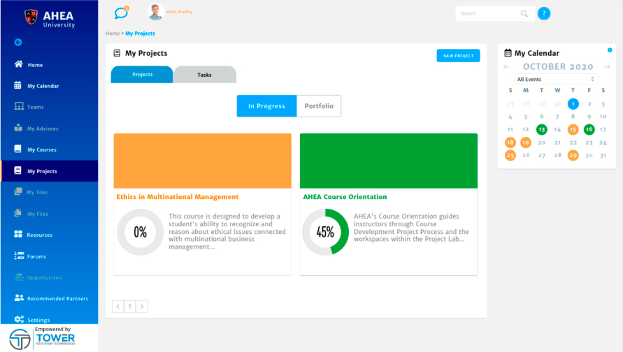
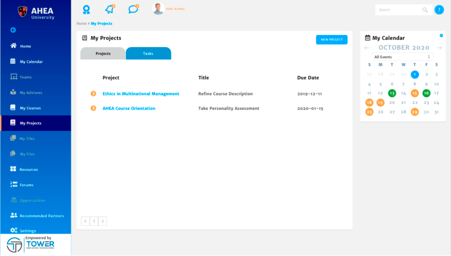

Customize your project milestones, collaborate in groups, and access a portfolio of your completed projects with CollaboratED™.
Educators can create and manage projects with ease using CollaboratED™. Select My Projects from the Left Navigation menu to access your projects. Here you can view the progress you and your team have made towards completing your projects. For information about how to create new projects, visit the Project Planning section.

Select the Tasks tab to view open tasks and due dates in all your projects. Select a task to enter into your project. With easy access to your calendar in the My Calendar tile, you can view tasks and events while navigating through your project workspaces.
